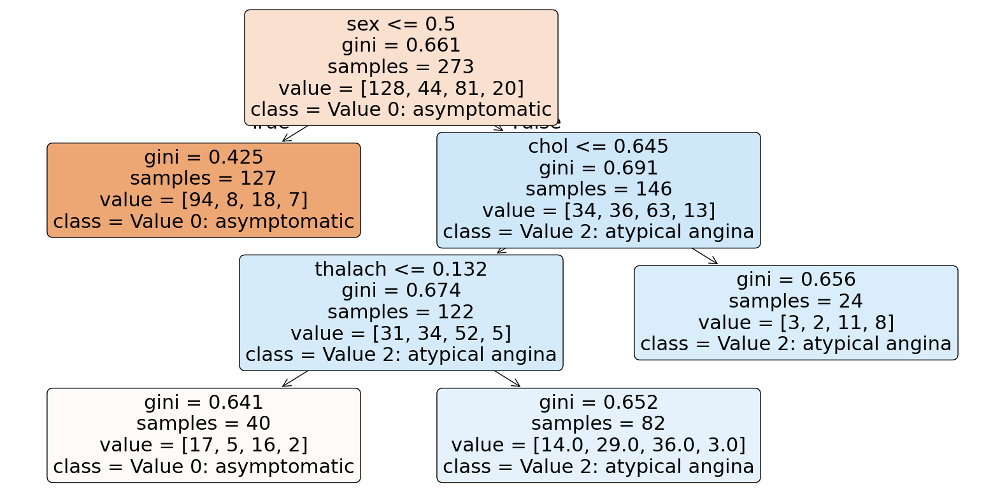

import pandas as pd
import numpy as np
import matplotlib.pyplot as plt
from plotnine import *
from sklearn.pipeline import Pipeline
from sklearn.linear_model import LinearRegression, LogisticRegression
from sklearn.metrics import r2_score, mean_squared_error
from sklearn.model_selection import train_test_split, cross_val_score, GridSearchCV, StratifiedKFold
from sklearn.preprocessing import PolynomialFeatures, StandardScaler, OneHotEncoder
from sklearn.compose import ColumnTransformer, make_column_selector
from sklearn.neighbors import KNeighborsRegressor, KNeighborsClassifier
from sklearn.tree import DecisionTreeRegressor, DecisionTreeClassifier, plot_tree
from sklearn.metrics import confusion_matrix, accuracy_score, precision_score, recall_score, f1_score, roc_auc_score, roc_curve, classification_report
from sklearn.discriminant_analysis import LinearDiscriminantAnalysis
from sklearn.svm import SVCOur dataset consists of clinical data from patients who entered the hospital complaining of chest pain (“angina”) during exercise. The information collected includes:
age: Age of the patientsex: Sex of the patientcp: Chest Pain type- Value 0: asymptomatic
- Value 1: typical angina
- Value 2: atypical angina
- Value 3: non-anginal pain
trtbps: resting blood pressure (in mm Hg)chol: cholesterol in mg/dl fetched via BMI sensorrestecg: resting electrocardiographic results- Value 0: normal
- Value 1: having ST-T wave abnormality (T wave inversions and/or ST elevation or depression of > 0.05 mV)
- Value 2: showing probable or definite left ventricular hypertrophy by Estes’ criteria
thalach: maximum heart rate achieved during exerciseoutput: the doctor’s diagnosis of whether the patient is at risk for a heart attack- 0 = not at risk of heart attack
- 1 = at risk of heart attack
ha = pd.read_csv("https://www.dropbox.com/s/aohbr6yb9ifmc8w/heart_attack.csv?dl=1")Q1: Natural Multiclass Models
Fit a multiclass KNN, Decision Tree, and LDA for the heart disease data; this time predicting the type of chest pain (categories 0 - 3) that a patient experiences. For the decision tree, plot the fitted tree, and interpret the first couple splits.
Multiclass KNN
# Multiclass KNN
# Split features and target variable
X = ha.drop(columns=['cp'])
y = ha['cp']
stratified_cv = StratifiedKFold(n_splits=5, shuffle=True, random_state=42)
# Define ColumnTransformer
ct = ColumnTransformer(
[
("dummify", OneHotEncoder(sparse_output = False, handle_unknown='ignore', drop="first"), ["sex", "output"]),
("standardize", StandardScaler(), ["age", "trtbps", "chol", "thalach"])
],
remainder = "drop"
)
# Define KNN pipeline
knn_pipeline = Pipeline([
("preprocessor", ct),
("knn", KNeighborsClassifier())]
)
param_grid = {'knn__n_neighbors': list(range(1, 21))}
grid_search = GridSearchCV(knn_pipeline, param_grid, cv=stratified_cv, scoring='accuracy', n_jobs=-1)
grid_search.fit(X, y)
best_k = grid_search.best_params_['knn__n_neighbors']
best_score = grid_search.best_score_
print(f"Best k: {best_k}")
print(f"Best cross-validated Accuracy Score: {best_score:.4f}")Best k: 15
Best cross-validated Accuracy Score: 0.5422final_knn_pipeline = Pipeline([
("preprocessor", ct),
("knn", KNeighborsClassifier(n_neighbors=best_k))]
)
final_knn_pipeline.fit(X, y)
y_pred_knn = final_knn_pipeline.predict(X)
knn_cm = confusion_matrix(y, y_pred_knn)
print(knn_cm)
print(classification_report(y, y_pred_knn))[[109 7 11 1]
[ 14 14 16 0]
[ 31 11 38 1]
[ 10 2 8 0]]
precision recall f1-score support
0 0.66 0.85 0.75 128
1 0.41 0.32 0.36 44
2 0.52 0.47 0.49 81
3 0.00 0.00 0.00 20
accuracy 0.59 273
macro avg 0.40 0.41 0.40 273
weighted avg 0.53 0.59 0.55 273
Decision Tree
# Decision Tree
# Define the pipeline
dt_pipeline = Pipeline([
("preprocessor", ct),
("dt", DecisionTreeClassifier(random_state=1))]
)
param_grid = {
'dt__ccp_alpha': [0.0, 0.001, 0.01, 0.1, 0.2, 0.3, 0.4, 0.5, 0.6, 0.7, 0.8, 0.9],
}
# Perform GridSearchCV
grid_search = GridSearchCV(dt_pipeline, param_grid, cv=stratified_cv, scoring='accuracy', n_jobs=-1)
grid_search.fit(X, y)
# Get the best parameters and ROC AUC
best_params = grid_search.best_params_
best_score = grid_search.best_score_
print(f"Best parameters: {best_params}")
print(f"Best cross-validated Accuracy Score: {best_score:.4f}")Best parameters: {'dt__ccp_alpha': 0.01}
Best cross-validated Accuracy Score: 0.5345# Define the final pipeline
final_dt_pipeline = Pipeline([
("preprocessor", ct),
("dt", DecisionTreeClassifier(ccp_alpha=0.01))
])
final_dt_pipeline.fit(X, y)
y_pred_dt = final_dt_pipeline.predict(X)
dt_cm = confusion_matrix(y, y_pred_dt)
print(dt_cm)
# Performance metrics
print(classification_report(y, y_pred_dt))[[111 0 17 0]
[ 13 0 31 0]
[ 34 0 47 0]
[ 9 0 11 0]]
precision recall f1-score support
0 0.66 0.87 0.75 128
1 0.00 0.00 0.00 44
2 0.44 0.58 0.50 81
3 0.00 0.00 0.00 20
accuracy 0.58 273
macro avg 0.28 0.36 0.31 273
weighted avg 0.44 0.58 0.50 273
/usr/local/lib/python3.10/dist-packages/sklearn/metrics/_classification.py:1531: UndefinedMetricWarning: Precision is ill-defined and being set to 0.0 in labels with no predicted samples. Use `zero_division` parameter to control this behavior.
/usr/local/lib/python3.10/dist-packages/sklearn/metrics/_classification.py:1531: UndefinedMetricWarning: Precision is ill-defined and being set to 0.0 in labels with no predicted samples. Use `zero_division` parameter to control this behavior.
/usr/local/lib/python3.10/dist-packages/sklearn/metrics/_classification.py:1531: UndefinedMetricWarning: Precision is ill-defined and being set to 0.0 in labels with no predicted samples. Use `zero_division` parameter to control this behavior.plt.figure(figsize=(20, 10))
plot_tree(final_dt_pipeline.named_steps['dt'], filled=True, feature_names=X.columns, class_names=["Value 0: asymptomatic", "Value 1: typical angina", "Value 2: atypical angina", "Value 3: non-anginal pain"], rounded=True)
plt.show()
Root Split (sex <= 0.5):
- Divides samples based on sex.
- The left node (females) is dominated by Class 0 (asymptomatic), while the right node (males) contains a mix of all classes.
Second Split (Right Node: chol <= 0.645):
- Further splits the male group based on cholesterol levels.
- Samples with lower cholesterol (chol <= 0.645) remain mixed but lean towards Class 2 (atypical angina).
# LDA
# Define the pipeline
lda_pipeline = Pipeline([
("preprocessor", ct),
("lda", LinearDiscriminantAnalysis())]
)
param_grid = {
'lda__solver': ['svd', 'lsqr', 'eigen'],
'lda__shrinkage': [None, 'auto', 0.1, 0.5, 0.9],
'lda__n_components': [None, 1, 2, 3] # Adjust based on the number of classes
}
# Perform GridSearchCV
grid_search = GridSearchCV(lda_pipeline, param_grid, cv=stratified_cv, scoring='accuracy', n_jobs=-1)
grid_search.fit(X, y)
# Get the best parameters and ROC AUC
best_params = grid_search.best_params_
best_score = grid_search.best_score_
print(f"Best parameters: {best_params}")
print(f"Best cross-validated Accuracy Score: {best_score:.4f}")Best parameters: {'lda__n_components': None, 'lda__shrinkage': 0.1, 'lda__solver': 'lsqr'}
Best cross-validated Accuracy Score: 0.5676/usr/local/lib/python3.10/dist-packages/sklearn/model_selection/_validation.py:540: FitFailedWarning:
80 fits failed out of a total of 300.
The score on these train-test partitions for these parameters will be set to nan.
If these failures are not expected, you can try to debug them by setting error_score='raise'.
Below are more details about the failures:
--------------------------------------------------------------------------------
80 fits failed with the following error:
Traceback (most recent call last):
File "/usr/local/lib/python3.10/dist-packages/sklearn/model_selection/_validation.py", line 888, in _fit_and_score
estimator.fit(X_train, y_train, **fit_params)
File "/usr/local/lib/python3.10/dist-packages/sklearn/base.py", line 1473, in wrapper
return fit_method(estimator, *args, **kwargs)
File "/usr/local/lib/python3.10/dist-packages/sklearn/pipeline.py", line 473, in fit
self._final_estimator.fit(Xt, y, **last_step_params["fit"])
File "/usr/local/lib/python3.10/dist-packages/sklearn/base.py", line 1473, in wrapper
return fit_method(estimator, *args, **kwargs)
File "/usr/local/lib/python3.10/dist-packages/sklearn/discriminant_analysis.py", line 629, in fit
raise NotImplementedError("shrinkage not supported with 'svd' solver.")
NotImplementedError: shrinkage not supported with 'svd' solver.
/usr/local/lib/python3.10/dist-packages/sklearn/model_selection/_search.py:1103: UserWarning: One or more of the test scores are non-finite: [0.56390572 0.56754209 0.56754209 nan 0.55643098 0.55643098
nan 0.56760943 0.56760943 nan 0.54942761 0.54942761
nan 0.52383838 0.52383838 0.56390572 0.56754209 0.56754209
nan 0.55643098 0.55643098 nan 0.56760943 0.56760943
nan 0.54942761 0.54942761 nan 0.52383838 0.52383838
0.56390572 0.56754209 0.56754209 nan 0.55643098 0.55643098
nan 0.56760943 0.56760943 nan 0.54942761 0.54942761
nan 0.52383838 0.52383838 0.56390572 0.56754209 0.56754209
nan 0.55643098 0.55643098 nan 0.56760943 0.56760943
nan 0.54942761 0.54942761 nan 0.52383838 0.52383838]# Define the final pipeline
final_lda_pipeline = Pipeline([
("preprocessor", ct),
("lda", LinearDiscriminantAnalysis(n_components=None, shrinkage=0.1, solver='lsqr'))
])
final_lda_pipeline.fit(X, y)
y_pred_lda = final_lda_pipeline.predict(X)
lda_cm = confusion_matrix(y, y_pred_lda)
print(lda_cm)
# Performance metrics
print(classification_report(y, y_pred_lda))[[100 2 26 0]
[ 8 2 33 1]
[ 24 4 52 1]
[ 9 0 9 2]]
precision recall f1-score support
0 0.71 0.78 0.74 128
1 0.25 0.05 0.08 44
2 0.43 0.64 0.52 81
3 0.50 0.10 0.17 20
accuracy 0.57 273
macro avg 0.47 0.39 0.38 273
weighted avg 0.54 0.57 0.53 273
Q2: OvR
Create a new column in the ha dataset called cp_is_3, which is equal to 1 if the cp variable is equal to 3 and 0 otherwise.
Then, fit a Logistic Regression to predict this new target, and report the F1 Score.
Repeat for the other three cp categories. Which category was the OvR approach best at distinguishing?
ha[f'cp_is_0'] = (ha['cp'] == 0).astype(int)
ha[f'cp_is_1'] = (ha['cp'] == 1).astype(int)
ha[f'cp_is_2'] = (ha['cp'] == 2).astype(int)
ha[f'cp_is_3'] = (ha['cp'] == 3).astype(int)stratified_cv = StratifiedKFold(n_splits=5, shuffle=True, random_state=42)
def logistic_regression_cv(X, target_column, columns_to_drop):
y = X[target_column]
X = X.drop(columns=columns_to_drop, axis=1)
ct = ColumnTransformer(
[("dummify", OneHotEncoder(sparse_output=False, handle_unknown='ignore', drop="first"),
make_column_selector(dtype_include=object))],
remainder="passthrough"
)
logreg_pipeline = Pipeline([
("preprocessing", ct),
("logreg", LogisticRegression(max_iter=1000))
])
lr_scores = cross_val_score(logreg_pipeline, X, y, cv=stratified_cv, scoring="f1_macro")
mean_score = lr_scores.mean()
print(f"Mean f1_macro score for {target_column}: {mean_score:.4f}")
cp_drop = ["cp_is_3", "cp_is_2", "cp_is_1", "cp_is_0", "cp"]
cp3_target = "cp_is_3"
cp2_target = "cp_is_2"
cp1_target = "cp_is_1"
cp0_target = "cp_is_0"
logistic_regression_cv(ha, cp3_target, cp_drop)
logistic_regression_cv(ha, cp2_target, cp_drop)
logistic_regression_cv(ha, cp1_target, cp_drop)
logistic_regression_cv(ha, cp1_target, cp_drop)Mean f1_macro score for cp_is_3: 0.4810
Mean f1_macro score for cp_is_2: 0.4443
Mean f1_macro score for cp_is_1: 0.4551
Mean f1_macro score for cp_is_1: 0.4551The OvR approach was best at distinguishing cp = 3.
Q3: OvO
Reduce your dataset to only the 0 and 1 types of chest pain.
Then, fit a Logistic Regression to predict between the two groups, and report the ROC-AUC.
Repeat comparing category 0 to 2 and 3. Which pair was the OvO approach best at distinguishing?
ha = ha.drop(["cp_is_3", "cp_is_2", "cp_is_1", "cp_is_0"], axis =1)def compare_ovo(ha, cp_a, cp_b):
"""
Compare two classes (cp_a and cp_b) using Logistic Regression and compute ROC-AUC.
"""
# Filter the dataset for the two classes
ha_filtered = ha[(ha["cp"] == cp_a) | (ha["cp"] == cp_b)].copy()
ha_filtered["is_comparison"] = (ha_filtered["cp"] == cp_b).astype(int) # Binary target
# Define features (X) and binary target (y)
X = ha_filtered.drop(columns=["cp", "is_comparison"])
y = ha_filtered["is_comparison"]
# Preprocessing for numeric and categorical features
ct = ColumnTransformer([
("dummify", OneHotEncoder(sparse_output=False, handle_unknown="ignore", drop='first'),
X.select_dtypes(include=["object", "category"]).columns),
("pass", "passthrough", X.select_dtypes(exclude=["object", "category"]).columns)
])
# Define the logistic regression pipeline
log_pipeline = Pipeline([
("preprocessing", ct),
("log", LogisticRegression(max_iter=1000, random_state=42, class_weight="balanced"))
])
# Cross-validate and compute the mean ROC-AUC score
roc_auc = cross_val_score(log_pipeline, X, y, cv=5, scoring="roc_auc").mean()
return roc_auc
# Perform OvO comparisons
roc_auc_cp0_vs_cp1 = compare_ovo(ha, 0, 1)
roc_auc_cp0_vs_cp2 = compare_ovo(ha, 0, 2)
roc_auc_cp0_vs_cp3 = compare_ovo(ha, 0, 3)
# Print results
print(f"ROC AUC (cp=0 vs cp=1): {roc_auc_cp0_vs_cp1:.4f}")
print(f"ROC AUC (cp=0 vs cp=2): {roc_auc_cp0_vs_cp2:.4f}")
print(f"ROC AUC (cp=0 vs cp=3): {roc_auc_cp0_vs_cp3:.4f}")ROC AUC (cp=0 vs cp=1): 1.0000
ROC AUC (cp=0 vs cp=2): 1.0000
ROC AUC (cp=0 vs cp=3): 1.0000